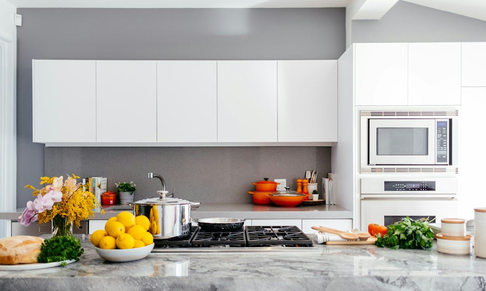

GRAMMAIRE · PARLER DE SOI ET DES AUTRES
Moi aussi ! Et toi ?Les pronoms toniques
Bonjour Penka !
Aujourd'hui, tu apprends les pronoms toniques : moi, toi, lui, elle, nous, vous, eux, elles. On les utilise tout le temps : pour répondre vite (Moi !), après avec, chez, pour (avec moi, chez toi), après c'est (c'est moi), et pour dire Moi aussi ! ou Moi non plus !. Après chaque règle, tu t'entraînes, puis tu parles beaucoup.
Today, you learn stressed pronouns: moi, toi, lui, elle, nous, vous, eux, elles. We use them all the time: to answer quickly (Me!), after avec, chez, pour (with me, at your place), after c'est (it's me), and to say “Me too!” or “Me neither!”. After each rule, you practise, then you talk a lot.
Je pars avec elle. Vous allez chez eux. Lui, il reste ici.
I'm leaving with her. You're going to their place. He is staying here.
▶ Clique pour écouter. Répète la phrase à voix haute.
Click to listen. Repeat the sentence out loud.
EN : la traduction en anglais. Essaie d'abord sans !
The English translation. Try without it first!
🗣️ Dans « À toi de parler », les débuts de phrase t'aident. Clique dessus pour les écouter.
In “À toi de parler”, the sentence starters help you. Click them to listen.
★ Tes réponses restent enregistrées. À la fin, « À revoir » te montre les points à retravailler.
Your answers stay saved. At the end, “À revoir” shows you the points to work on again.
1
Moi, toi, lui… : les pronoms toniques
Stressed pronouns: moi, toi, lui…
Pronom sujet ou pronom tonique ?
Subject pronoun or stressed pronoun?
Le pronom sujet (je, tu, il…) est toujours avec un verbe. Le pronom tonique (moi, toi, lui…) peut être seul, sans verbe.
The subject pronoun (je, tu, il…) always goes with a verb. The stressed pronoun (moi, toi, lui…) can stand alone, without a verb.
je→moime
tu→toiyou
il→luihim
elle→elleher
nous→nousus
vous→vousyou
ils→euxthem
elles→ellesthem
💡 Facile !
elle, nous, vous, elles ne changent pas. Attention à il → lui et ils → eux.
“elle, nous, vous, elles” don't change. Watch out for il → lui and ils → eux.
Pour répondre vite à « Qui ? »
— Qui veut un café ? — Moi !
— Who wants a coffee? — Me!
— Qui parle bulgare ici ? — Elle !
— Who speaks Bulgarian here? — She does!
— Qui vient ce soir ? — Eux, les voisins.
— Who is coming tonight? — Them, the neighbours.
— Qui a fini le dossier ? — Lui !
— Who finished the file? — He did!
1
QUI ? → MOI !
Penka, choisis ou écris le pronom tonique.
Penka, choose or write the stressed pronoun.
1
— Qui veut du thé ? — ______ !
— Who wants some tea? — Me!
✓ — Qui veut du thé ? — Moi !
2
— Qui a les clés de la voiture ? Ton mari ? — Oui, ______ !
— Who has the car keys? Your husband? — Yes, him!
✓ Oui, lui !
3
— Qui a mangé tout le chocolat ? Les enfants ? — Oui, ______ !
— Who ate all the chocolate? The children? — Yes, them!
✓ Oui, eux !
4
— Qui est à la porte ? Marie et Sophie ? — Oui, ______ !
— Who is at the door? Marie and Sophie? — Yes, them!
✓ Oui, elles !
5
— Qui a oublié ce sac ? Monsieur Petrov ? — Oui, !
— Who forgot this bag? Mr Petrov? — Yes, him!
✓ Oui, lui !
6
— Qui veut venir avec moi ? Toi et ton mari ? — Oui, !
— Who wants to come with me? You and your husband? — Yes, us!
✓ Oui, nous !
🗣️ À toi de parler !
Réponds à voix haute avec une phrase complète. Les débuts de phrase t'aident : clique pour les écouter. Puis compare avec l'exemple.
Answer out loud with a full sentence. The sentence starters help you: click to listen. Then compare with the example.
1
Dans ta famille, qui se lève le premier le matin ?
In your family, who gets up first in the morning?
Pour t'aider :
Exemple de réponse
Moi ! Je me lève avant tout le monde, à six heures et demie.
Me! I get up before everyone, at half past six.
2
Au bureau, qui parle bulgare ?
At the office, who speaks Bulgarian?
Pour t'aider :
Exemple de réponse
Moi ! Et elle aussi, ma collègue Maria. Nous parlons bulgare avec les clients.
Me! And her too, my colleague Maria. We speak Bulgarian with the clients.
3
Chez toi, qui fait la cuisine ? Et qui fait la vaisselle ?
At home, who cooks? And who does the washing-up?
Pour t'aider :
Exemple de réponse
La cuisine ? Moi ! La vaisselle ? Lui, mon mari… ou eux, les enfants !
The cooking? Me! The washing-up? Him, my husband… or them, the children!

2
Avec moi, chez toi, pour lui
After a preposition: with me, at your place, for him
Après une préposition
After a preposition
Après avec, chez, pour, sans, à côté de, devant, derrière, à…, on utilise un pronom tonique.
After avec, chez, pour, sans, à côté de, devant, derrière, à…, we use a stressed pronoun.
avec · chez · pour · sans…+moi · toi · lui · elle · nous · vous · eux · elles
Je travaille avec elle depuis deux ans.
I have been working with her for two years.
Ce soir, on dîne chez eux.
Tonight, we are having dinner at their place.
Ce cadeau, c'est pour toi !
This present is for you!
Ils partent en vacances sans nous.
They are going on holiday without us.
Assieds-toi à côté de moi.
Sit next to me.
Je pense souvent à toi.
I often think of you.
🏠 chez moi = à la maison
chez + pronom = la maison de cette personne.
chez + pronoun = that person's home.
Le soir, je rentre chez moi à six heures.
In the evening, I go home at six.
Venez chez nous samedi !
Come to our place on Saturday!
✨ soi = pour « on », « tout le monde »
Avec on, chacun, il faut, on dit soi.
With on, chacun, il faut, we say soi (oneself).
On est bien chez soi.
There's no place like home.
Il faut prendre soin de soi.
You have to take care of yourself.
2
AVEC MOI, CHEZ TOI
Penka, complète avec le bon pronom tonique.
Penka, complete with the right stressed pronoun.
1
Mon mari et moi, nous partons au ski. Les enfants viennent avec ______.
My husband and I are going skiing. The children are coming with us.
✓ Les enfants viennent avec nous.
2
Ma collègue est très sympa. Je déjeune souvent avec ______.
My colleague is very nice. I often have lunch with her.
✓ Je déjeune souvent avec elle.
3
Tes parents sont à Sofia ? Tu vas chez ______ à Noël ?
Your parents are in Sofia? Are you going to their place at Christmas?
✓ Tu vas chez eux à Noël ?
4
Luka, ce gâteau est pour ! Joyeux anniversaire !
Luka, this cake is for you! Happy birthday!
✓ Luka, ce gâteau est pour toi ! Joyeux anniversaire !
5
Le soir, je suis fatiguée : je rentre directement chez .
In the evening, I am tired: I go straight home.
✓ Je rentre directement chez moi.
6
Quand il fait froid, on est bien chez ______.
When it is cold, it is nice to be at home.
✓ Quand il fait froid, on est bien chez soi.
7
Mon chef ne va jamais en réunion sans : c'est moi qui prépare les dossiers !
My boss never goes to a meeting without me: I am the one who prepares the files!
✓ Mon chef ne va jamais en réunion sans moi.
🗣️ À toi de parler !
Réponds à voix haute avec une phrase complète. Les débuts de phrase t'aident : clique pour les écouter. Puis compare avec l'exemple.
Answer out loud with a full sentence. The sentence starters help you: click to listen. Then compare with the example.
1
Avec qui est-ce que tu travailles ? Tu t'entends bien avec eux ?
Who do you work with? Do you get on well with them?
Pour t'aider :
Exemple de réponse
Je travaille avec deux collègues, Maria et Ivan. Je m'entends très bien avec eux. Avec elle, je déjeune souvent.
I work with two colleagues, Maria and Ivan. I get on very well with them. I often have lunch with her.
2
Le week-end, qu'est-ce que tu fais avec ta famille ? Vous restez chez vous ?
At the weekend, what do you do with your family? Do you stay at home?
Pour t'aider :
Exemple de réponse
Le samedi, on reste souvent chez nous. Le dimanche, nous allons chez des amis et nous déjeunons avec eux.
On Saturdays, we often stay at home. On Sundays, we go to some friends' place and we have lunch with them.
3
Tu prends du temps pour toi, pour prendre soin de toi ?
Do you take time for yourself, to take care of yourself?
Pour t'aider :
Exemple de réponse
Oui, le dimanche matin, je prends une heure pour moi : je marche dans le parc. Il faut prendre soin de soi !
Yes, on Sunday mornings, I take an hour for myself: I walk in the park. You have to take care of yourself!
3
C'est moi !
It's me!
Après « c'est »
After “c'est”
Après c'est, on utilise un pronom tonique.
After “c'est”, we use a stressed pronoun.
Allô ? C'est moi, Penka !
Hello? It's me, Penka!
— C'est toi sur la photo ? — Oui, c'est moi !
— Is that you in the photo? — Yes, it's me!
C'est lui, mon nouveau chef.
That's him, my new boss.
Ce sont eux, nos voisins.
That's them, our neighbours.
👥 eux, elles
Avec eux et elles, on écrit ce sont eux / ce sont elles. À l'oral, on entend aussi c'est eux.
With eux and elles, we write “ce sont eux / ce sont elles”. When speaking, you also hear “c'est eux”.
⭐ C'est moi qui… = I'm the one who…
Le verbe va avec le pronom : c'est moi qui fais, c'est toi qui as, c'est lui qui fait.
The verb agrees with the pronoun: c'est moi qui fais, c'est toi qui as, c'est lui qui fait.
C'est moi qui fais la cuisine.
I'm the one who cooks.
C'est lui qui conduit.
He's the one who drives.
3
C'EST MOI !
Penka, choisis ou écris la bonne réponse.
Penka, choose or write the right answer.
1
Toc toc ! — Qui est là ? — C'est ______, Penka !
Knock knock! — Who's there? — It's me, Penka!
✓ C'est moi, Penka !
2
Regarde la photo : ce sont ______, mes enfants, à la plage.
Look at the photo: that's them, my children, at the beach.
✓ Ce sont eux, mes enfants, à la plage.
3
Tu connais cette dame ? — Oui, c'est ______, la directrice.
Do you know this lady? — Yes, that's her, the director.
✓ Oui, c'est elle, la directrice.
4
— C'est toi qui as appelé ? — Oui, c'est !
— Was it you who called? — Yes, it was me!
✓ Oui, c'est moi !
5
— C'est vous, Madame Ivanova ? — Oui, c'est .
— Is that you, Mrs Ivanova? — Yes, it's me.
✓ Oui, c'est moi.
6
Chez nous, c'est ______ qui fais la cuisine !
At home, I'm the one who cooks!
✓ Chez nous, c'est moi qui fais la cuisine !
🗣️ À toi de parler !
Réponds à voix haute avec une phrase complète. Les débuts de phrase t'aident : clique pour les écouter. Puis compare avec l'exemple.
Answer out loud with a full sentence. The sentence starters help you: click to listen. Then compare with the example.
1
Tu téléphones à une amie. Elle répond : « Allô ? » Qu'est-ce que tu dis ?
You phone a friend. She answers: “Hello?” What do you say?
Pour t'aider :
Exemple de réponse
Allô, c'est moi, Penka ! Tu as deux minutes ?
Hello, it's me, Penka! Have you got two minutes?
2
Décris une photo de ta famille. Qui est-ce ?
Describe a photo of your family. Who is it?
Pour t'aider :
Exemple de réponse
Ici, c'est moi, à la montagne. À côté de moi, c'est lui, mon mari. Et devant nous, ce sont eux, nos enfants.
Here, that's me, in the mountains. Next to me, that's him, my husband. And in front of us, that's them, our children.
3
Chez toi, qui fait quoi ?
At home, who does what?
Pour t'aider :
Exemple de réponse
C'est moi qui fais les courses. C'est lui qui fait la cuisine le week-end. Et ce sont les enfants qui mettent la table.
I'm the one who does the shopping. He's the one who cooks at the weekend. And the children are the ones who set the table.
4
Moi aussi ! Moi non plus !
Me too! Me neither!
Moi aussi, moi non plus, pas moi
Me too, me neither, not me
Avec aussi, non plus, pas, et, ni, on utilise un pronom tonique.
With aussi, non plus, pas, et, ni, we use a stressed pronoun.
➕ La phrase est positive
— J'ai froid. — Moi aussi !
— I'm cold. — Me too!
= même avis
= same opinion
— J'aime le lundi. — Pas moi !
— I like Mondays. — Not me!
= avis différent
= different opinion
➖ La phrase est négative
— Je n'ai pas faim. — Moi non plus.
— I'm not hungry. — Me neither.
= même avis
= same opinion
— Je ne bois pas de café. — Moi si !
— I don't drink coffee. — I do!
= avis différent
= different opinion
même avis
avis différent
➕
moi aussi
pas moi
➖
moi non plus
moi si
🔗 et, ni
Lui et moi, nous sommes bulgares.
He and I are Bulgarian.
Ni lui ni moi ne parlons allemand.
Neither he nor I speak German.
Mon mari n'aime pas le froid, et les enfants non plus. Eux non plus !
My husband doesn't like the cold, and neither do the children. Neither do they!
4
MOI AUSSI ? MOI NON PLUS ?
Penka, réponds à la phrase.
Penka, answer the sentence.
1
— J'aime beaucoup Luxembourg. — ______ ! C'est une belle ville.
— I really like Luxembourg. — Me too! It's a beautiful city.
✓ Moi aussi ! C'est une belle ville.
2
— Je ne parle pas bien allemand. — ______ ! C'est difficile.
— I don't speak German well. — Me neither! It's difficult.
✓ Moi non plus ! C'est difficile.
3
— Je ne bois pas de café le soir. — ______ ! J'en bois un à neuf heures.
— I don't drink coffee in the evening. — I do! I drink one at nine.
✓ Moi si ! J'en bois un à neuf heures.
4
— J'adore le lundi matin ! — ______ ! Je déteste le lundi matin.
— I love Monday mornings! — Not me! I hate Monday mornings.
✓ Pas moi ! Je déteste le lundi matin.
5
Mon mari n'aime pas le froid. Et les enfants ? ______ non plus.
My husband doesn't like the cold. And the children? Neither do they.
✓ Eux non plus.
6
Ma collègue est fatiguée, et aussi : on a beaucoup de travail ! (je)
My colleague is tired, and so am I: we have a lot of work!
✓ Ma collègue est fatiguée, et moi aussi.
7
Ni ni moi ne sommes français : nous sommes bulgares. (mon mari)
Neither he nor I are French: we are Bulgarian.
✓ Ni lui ni moi ne sommes français.
🗣️ À toi de parler !
(Indication donnée : Irène dit une phrase sur elle. Tu réponds tout de suite.)
Irène says a sentence about herself. You answer straight away.
Réponds vite : « Moi aussi ! », « Moi non plus ! », « Pas moi ! » ou « Moi si ! ». Puis explique avec une phrase.
Answer quickly: “Moi aussi!”, “Moi non plus!”, “Pas moi!” or “Moi si!”. Then explain with one sentence.
1
J'adore la mer.
I love the sea.
Pour t'aider :
Exemple de réponse
Moi aussi ! L'été, nous allons à la mer en Bulgarie.
Me too! In summer, we go to the seaside in Bulgaria.
2
Je ne fais pas de sport le week-end.
I don't do any sport at the weekend.
Pour t'aider :
Exemple de réponse
Moi si ! Le samedi matin, je marche une heure.
I do! On Saturday mornings, I walk for an hour.
3
Je bois trois cafés par jour.
I drink three coffees a day.
Pour t'aider :
Exemple de réponse
Pas moi ! Je bois un seul café, le matin.
Not me! I drink only one coffee, in the morning.
4
Je n'aime pas conduire en ville.
I don't like driving in town.
Pour t'aider :
Exemple de réponse
Moi non plus ! En ville, je prends le bus.
Me neither! In town, I take the bus.
5
J'aime cuisiner pour mes amis.
I like cooking for my friends.
Pour t'aider :
Exemple de réponse
Moi aussi ! Je fais souvent des plats bulgares.
Me too! I often make Bulgarian dishes.
5
Moi, je… : insister et comparer
Stressing and comparing
Moi, je… : insister et comparer
Moi, je…: stressing and comparing
On met le pronom tonique avant le sujet pour insister, ou pour comparer deux personnes.
We put the stressed pronoun before the subject to insist, or to compare two people.
— Je suis en pleine forme, et toi ? — Moi, je suis fatiguée.
— I'm full of energy, and you? — Me, I'm tired.
Mon mari aime la montagne. Moi, je préfère la mer.
My husband likes the mountains. Me, I prefer the sea.
Lui, il travaille à la maison ; moi, je vais au bureau.
He works from home; I go to the office.
Les enfants, eux, ne veulent jamais se coucher !
The children never want to go to bed!
↔️ Au début ou à la fin
Moi, je suis d'accord. = Je suis d'accord, moi.
I agree, personally.
⚠️ Attention
Pour commencer une conversation, on ne dit pas « Moi, je… » : c'est un peu égocentrique ! On garde « Moi, je… » pour comparer avec une autre personne.
Don't start a conversation with “Moi, je…”: it sounds a bit self-centred! Keep “Moi, je…” for comparing with someone else.
5
MOI, JE…
Penka, choisis, écris ou remets les mots dans l'ordre.
Penka, choose, write or put the words in order.
1
Mon mari adore le football. ______, je préfère le tennis.
My husband loves football. Me, I prefer tennis.
✓ Moi, je préfère le tennis.
2
Les parents mangent à la maison. Les enfants, ______, mangent à la cantine.
The parents eat at home. The children eat in the canteen.
✓ Les enfants, eux, mangent à la cantine.
3
______, tu as de la chance : tu habites près du bureau !
You're lucky: you live near the office!
✓ Toi, tu as de la chance !
4
Le matin, tu arrives au bureau. Qu'est-ce que tu dis ?
In the morning, you arrive at the office. What do you say?
✓ Bonjour à tous ! Vous avez passé un bon week-end ?
5
Remets les mots dans l'ordre.
Put the words in order. (He works from home.)
✓ Lui, il travaille à la maison.
6
Mes collègues partent à midi. , je reste au bureau jusqu'à six heures. (je)
My colleagues leave at noon. Me, I stay at the office until six.
✓ Moi, je reste au bureau jusqu'à six heures.
🗣️ À toi de parler !
Réponds à voix haute avec une phrase complète. Les débuts de phrase t'aident : clique pour les écouter. Puis compare avec l'exemple.
Answer out loud with a full sentence. The sentence starters help you: click to listen. Then compare with the example.
1
Compare-toi avec ton mari : le matin, le week-end, la cuisine…
Compare yourself with your husband: in the morning, at the weekend, cooking…
Pour t'aider :
Exemple de réponse
Lui, il se lève tôt et il fait du sport. Moi, je préfère dormir un peu plus ! Mais le soir, nous, on cuisine ensemble.
He gets up early and does sport. Me, I prefer to sleep a bit longer! But in the evening, we cook together.
2
Compare la vie en Bulgarie et au Luxembourg.
Compare life in Bulgaria and in Luxembourg.
Pour t'aider :
Exemple de réponse
En Bulgarie, les gens dînent tard. Ici, eux, ils dînent tôt, vers sept heures. Moi, je trouve ça pratique avec les enfants.
In Bulgaria, people have dinner late. Here, they have dinner early, around seven. Personally, I find that practical with the children.
3
Tes enfants ont les mêmes goûts que toi ?
Do your children have the same tastes as you?
Pour t'aider :
Exemple de réponse
Non ! Eux, ils adorent les jeux vidéo. Moi, je préfère lire. Mon fils, lui, aime aussi le football.
No! They love video games. Me, I prefer reading. My son also likes football.
6
Une pause café au bureau
A coffee break at the office
Écoute et lis le dialogue
Listen to and read the dialogue
Penka et sa collègue Sophie font une pause café. Écoute chaque phrase et répète. Trouve tous les pronoms toniques !
Penka and her colleague Sophie are having a coffee break. Listen to each sentence and repeat. Find all the stressed pronouns!
Sophie
Salut Penka ! Tu prends un café avec moi ?
Hi Penka! Will you have a coffee with me?
Penka
Avec plaisir ! Toi, tu prends un cappuccino, comme d'habitude ?
With pleasure! You're having a cappuccino, as usual?
Sophie
Oui, et toi ?
Yes, and you?
Penka
Moi aussi, aujourd'hui !
Me too, today!
Sophie
Ce soir, Marc et moi, on va au restaurant. Tu viens avec nous ?
Tonight, Marc and I are going to a restaurant. Are you coming with us?
Penka
Je ne peux pas. Mon mari travaille tard, alors je rentre chez moi.
I can't. My husband is working late, so I'm going home.
Sophie
Dommage ! Il ne finit jamais tôt ?
Shame! Does he never finish early?
Penka
Lui ? Jamais ! Il adore son travail. Moi, je préfère les week-ends !
Him? Never! He loves his job. Me, I prefer weekends!
Sophie
Ha ha ! Moi aussi !
Ha ha! Me too!
6
LUNDI MATIN AU BUREAU
Penka, complète le dialogue avec Ivan.
Penka, complete the dialogue with Ivan.
1
Ivan : Bonjour Penka ! Tu as passé un bon week-end ?
Penka : Oui, très bon ! Et ?
Penka : Oui, très bon ! Et ?
Ivan: Hello Penka! Did you have a good weekend? Penka: Yes, very good! And you?
✓ Oui, très bon ! Et toi ?
2
Ivan : Moi, je suis resté chez : j'étais malade.
Ivan: I stayed at home: I was ill.
✓ Moi, je suis resté chez moi : j'étais malade.
3
Penka : Oh non ! Et ta femme, elle est malade aussi ?
Ivan : Non, , elle va bien.
Ivan : Non, , elle va bien.
Penka: Oh no! And your wife, is she ill too? Ivan: No, she is fine.
✓ Non, elle, elle va bien.
4
Ivan : Le chef cherche les dossiers bulgares. C'est qui les as ?
Ivan: The boss is looking for the Bulgarian files. Are you the one who has them?
✓ C'est toi qui les as ?
5
Penka : Oui, c'est ! Je les apporte tout de suite.
Penka: Yes, it's me! I'll bring them straight away.
✓ Oui, c'est moi ! Je les apporte tout de suite.
6
Ivan : Merci ! Sans , on ne trouve jamais rien !
Ivan: Thanks! Without you, we never find anything!
✓ Merci ! Sans toi, on ne trouve jamais rien !
7
Remets les mots dans l'ordre.
Put the words in order. (Are you having lunch with us today?)
✓ Tu déjeunes avec nous aujourd'hui ?
8
Remets les mots dans l'ordre.
Put the words in order. (That's them, our new clients.)
✓ Ce sont eux, nos nouveaux clients.
🗣️ À toi de parler !
(Indication donnée : Irène joue Sophie, ta collègue.)
Irène plays Sophie, your colleague.
Réponds à Sophie à voix haute. Utilise un pronom tonique dans chaque réponse.
Answer Sophie out loud. Use a stressed pronoun in each answer.
1
Tu viens déjeuner avec nous à midi ?
Are you coming to lunch with us at noon?
Pour t'aider :
Exemple de réponse
Avec vous ? Oui, avec plaisir ! Je viens avec vous à midi.
With you? Yes, with pleasure! I'm coming with you at noon.
2
Je n'aime pas les lundis. Et toi ?
I don't like Mondays. And you?
Pour t'aider :
Exemple de réponse
Moi non plus ! Le lundi, il y a toujours beaucoup de travail.
Me neither! On Mondays, there's always a lot of work.
3
C'est toi qui t'occupes des dossiers bulgares ?
Are you the one who deals with the Bulgarian files?
Pour t'aider :
Exemple de réponse
Oui, c'est moi qui m'occupe des dossiers bulgares. Je travaille avec Ivan. Lui, il parle aussi bulgare.
Yes, I'm the one who deals with the Bulgarian files. I work with Ivan. He speaks Bulgarian too.
4
Ce week-end, tu restes chez toi ?
This weekend, are you staying at home?
Pour t'aider :
Exemple de réponse
Non, nous allons chez des amis à Trèves. Les enfants viennent avec nous.
No, we're going to some friends' place in Trier. The children are coming with us.
★
Mes phrases utiles
My useful phrases
Écoute et répète ces phrases chaque jour. Tu peux les utiliser tout de suite !
Listen to and repeat these phrases every day. You can use them straight away!
Moi aussi !
Me too!
Moi non plus !
Me neither!
Pas moi !
Not me!
Moi si !
I do!
Et toi ?
And you?
Allô, c'est moi, Penka.
Hello, it's me, Penka.
Tu viens avec moi ?
Are you coming with me?
Je rentre chez moi.
I'm going home.
Je travaille avec eux.
I work with them.
C'est pour toi !
It's for you!
C'est moi qui m'en occupe.
I'm the one who deals with it.
Mon mari aime la montagne. Moi, je préfère la mer.
My husband likes the mountains. Me, I prefer the sea.
Il faut prendre soin de soi.
You have to take care of yourself.
Lui et moi, nous sommes bulgares.
He and I are Bulgarian.
★
À revoir
To review
Clique sur le lien pour relire la règle, puis écoute la bonne phrase et répète-la.
Click the link to read the rule again, then listen to the correct sentence and repeat it.
Pas encore d'erreur. Les points à revoir apparaissent ici quand tu fais les exercices.
| Ex. | La bonne réponse | Ma réponse | La règle |
|---|